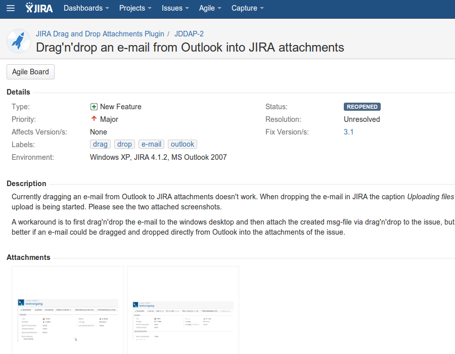
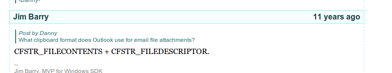
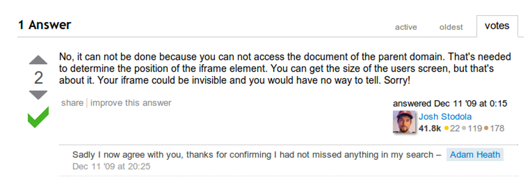
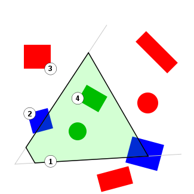
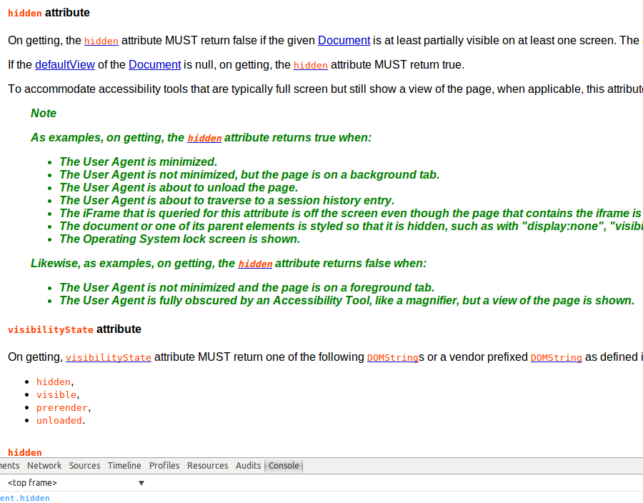

To watch or to touch, browsers are open source for a reason
Grzegorz Tańczyk, fb@tanczyk.pl
My story
| 1998 | programming a lot: Turbo Pascal, Delphi, C++, asm, DirectX, OpenGL, gamedev wannabe, founder of Warsztat(gamedev.pl) |
| 2004 | serious business, simple classified ads website, yet very profitable |
| 2012 | Gemius - tracking scripts, gemiusDirectEffect webapp |
| 2013 | Spartez/Atlassian - JIRA, legacy code and monstrous ecosystem |
Sources of headache
- Unknown execution environment
- Uncertainty if any 3rd party code will break our system
- Can we break anything with our code?
- What assumptions do we rely on?
- Can I sleep well after deployment?
Natura abhorret vacuum
Prerequisites
Issue trackers
Source code

or...
git clone git://git.webkit.org/WebKit.git WebKit
git clone https://chromium.googlesource.com/chromium/src
hg clone https://hg.mozilla.org/mozilla-central/ firefoxTests
Mozilla
<!DOCTYPE HTML>
<html>
<head>
<meta charset="utf-8">
<script type="application/javascript" src="/tests/SimpleTest/SimpleTest.js"></script>
<script type="text/javascript" src="/tests/SimpleTest/EventUtils.js"></script>
<link rel="stylesheet" type="text/css" href="/tests/SimpleTest/test.css"/>
</head>
<body>
<p id="display"></p>
<div id="content" style="display: none">
</div>
<div id="testDiv"> </div>
<script>
var textNode = testDiv.firstChild;
var range = new Range();
range.selectNodeContents(textNode);
is(range.getClientRects().length, 1, "Text node should have a rectangle");
var rect = range.getClientRects()[0];
ok(rect.left > 0, "Rectangle x should be greater than zero");
ok(rect.top > 0, "Rectangle y should be greater than zero");
is(rect.width, 0, "Rectangle should be zero width");
is(rect.height, 0, "Rectangle should be zero height");
</script>
</body>
</html>Chrome
window.addEventListener('DOMContentLoaded', function() {
var body = document.body;
var div = body.appendChild(document.createElement('div'));
var input1 = body.appendChild(document.createElement('input'));
var input2 = body.appendChild(document.createElement('input'));
input1.focus();
input1.addEventListener('blur', function() {
div.setAttribute('baz', 'bat');
});
var success = false;
var mutationsDelivered = false;
var MutationObserver = MutationObserver || WebKitMutationObserver;
var observer = new MutationObserver(function() {
mutationsDelivered = true;
if (success)
chrome.test.succeed();
});
observer.observe(document, { subtree: true, attributes: true });
// The getAll callback should be counted as a V8RecursionScope and cause
// the delivery of MutationRecords to be delayed until it has exited.
chrome.windows.getAll(function() {
div.setAttribute('foo', 'bar');
input2.focus();
if (mutationsDelivered)
chrome.test.fail();
else
success = true;
});WebKit
var t = async_test("arc() from 0 to pi does not draw anything in the wrong half");
_addTest(function(canvas, ctx) {
ctx.fillStyle = '#0f0';
ctx.fillRect(0, 0, 100, 50);
ctx.lineWidth = 50;
ctx.strokeStyle = '#f00';
ctx.beginPath();
ctx.arc(50, 50, 50, 0, Math.PI, false);
ctx.stroke();
_assertPixel(canvas, 50,25, 0,255,0,255, "50,25", "0,255,0,255");
_assertPixel(canvas, 1,1, 0,255,0,255, "1,1", "0,255,0,255");
_assertPixel(canvas, 98,1, 0,255,0,255, "98,1", "0,255,0,255");
_assertPixel(canvas, 1,48, 0,255,0,255, "1,48", "0,255,0,255");
_assertPixel(canvas, 20,48, 0,255,0,255, "20,48", "0,255,0,255");
_assertPixel(canvas, 98,48, 0,255,0,255, "98,48", "0,255,0,255");
});MSIE
Remarks in MSDN are quite useful and informative
Real world examples
256 CSS Classes Can Override an #id
Can I drag email from MS Outlook to browser?
Why?
diff -r dfaba4e449bd widget/src/windows/nsClipboard.cpp
+ // If the format is CF_HDROP and we haven't found any files we can try looking
+ // for virtual files with FILEDESCRIPTOR.
+ if ((hres != S_OK) && (format == CF_HDROP)) {
+ hres = FillSTGMedium(
+ aDataObject,
+ nsClipboard::CF_FILEDESCRIPTOR,
+ &fe,
+ &stm,
+ TYMED_HGLOBAL);
+ }
+"CF_HDROP Outlook" -> Google.com
We've got a clue!
Measuring visibility of cross-domain iframe
- Advertising industry spends billions of dollars on ad impressions
- Most of those are never seen by audience
- Advertisers would like to measure the ad viewability metric
- Majority of ads are served via cross domain iframes
It is not possible to check iframe visibility
A blast from the past
Viewing frustum culling anyone?
Chrome
Firefox
for(var key in window) {
key.match(/paint/i) &&
console.log(key)
}> mozPaintCountsource/layout/base/tests/test_mozPaintCount.html
SimpleTest.waitForExplicitFinish();
var startPaintCount = window.mozPaintCount;
ok(true, "Got to initial paint count: " + startPaintCount);
var color = 0;
function doPluginFlicker() {
ok(true, "Plugin color iteration " + color + ", paint count: " + window.mozPaintCount);
if (window.mozPaintCount - startPaintCount > 20) {
ok(true, "Got enough paints from plugin color changes");
SimpleTest.finish();
return;
}
color = (color + 1) % 256;
var str = color.toString(16);
if (str.length < 2) {
str = "0" + str;
}
str = "FF" + str + str + str;
document.getElementById("p").setColor(str);
setTimeout(doPluginFlicker, 0);
}
function doBackgroundFlicker() {
ok(true, "Background color iteration " + color + ", paint count: " + window.mozPaintCount);
if (window.mozPaintCount - startPaintCount > 20) {
ok(true, "Got enough paints from background color changes");
startPaintCount = window.mozPaintCount;
doPluginFlicker();
return;
}
color = (color + 1) % 256;
document.body.style.backgroundColor = "rgb(" + color + "," + color + "," + color + ")";
setTimeout(doBackgroundFlicker, 0);
}Cross-browser solution
W3C Working Groups
document.hidden
The iFrame that is queried for this attribute is off the screen even though the page that contains the iframe is in the foreground and visible on the screen.
https://lists.w3.org
Contributing code
- Find a problem
- Get in touch with committers(mailing lists, IRC channel)
- Open discussion about the problem
- Implement the patch
- Find a committer and ask for code review